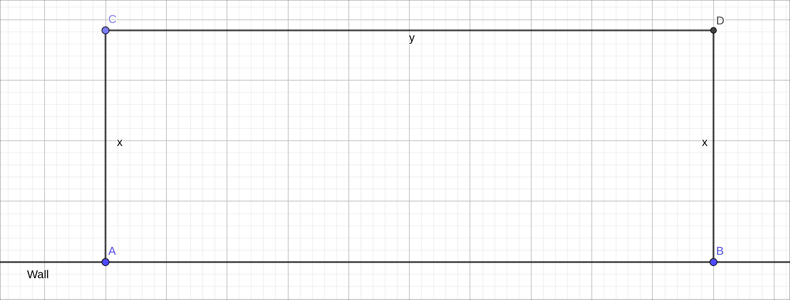
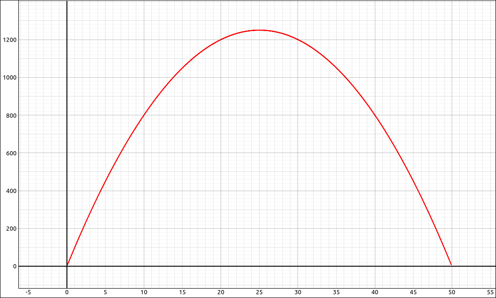
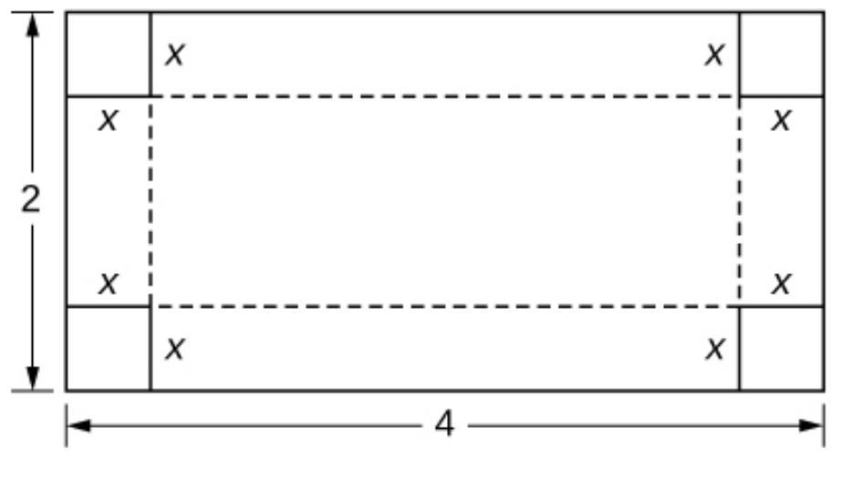
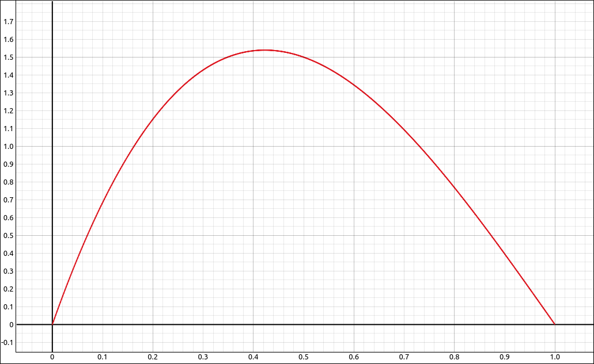
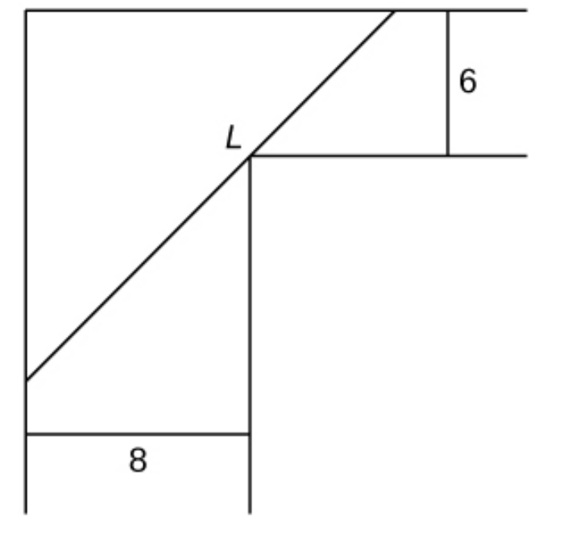
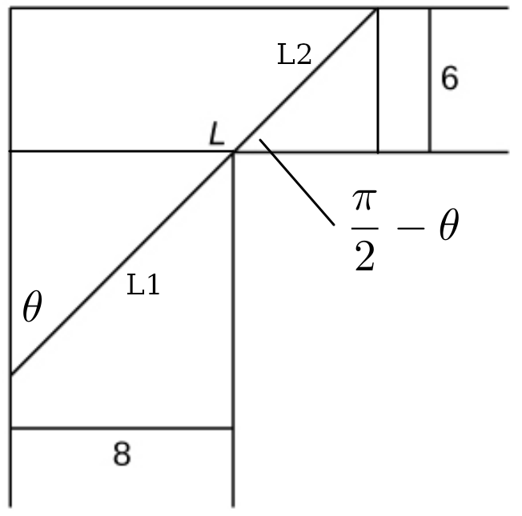
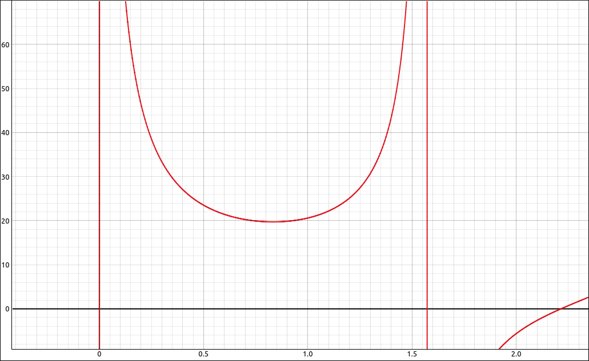
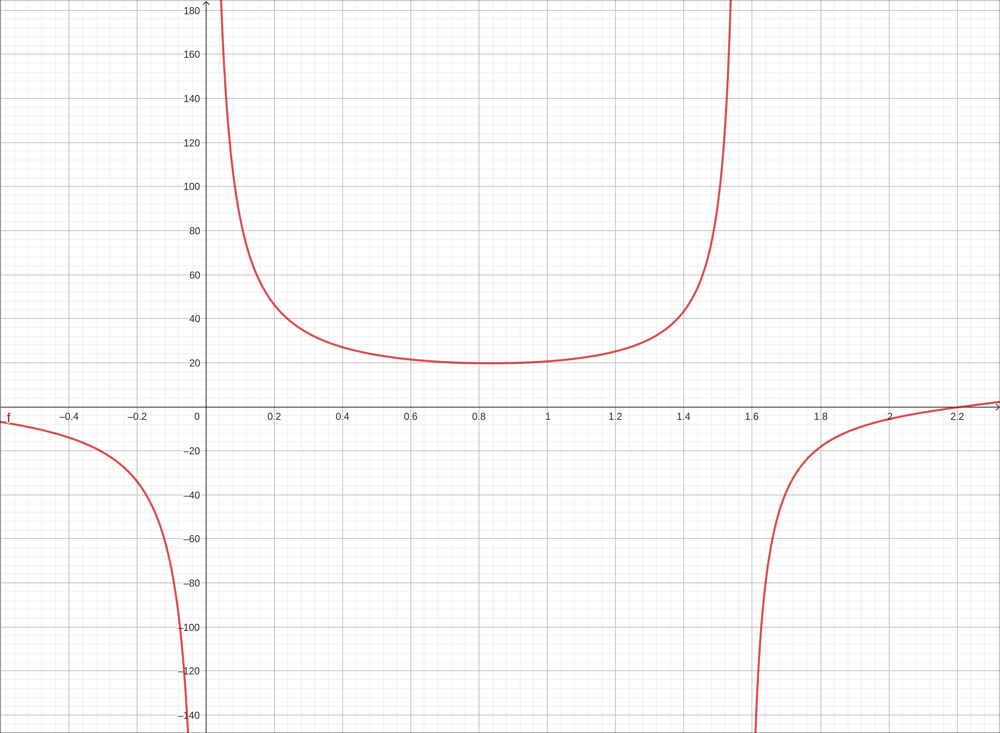
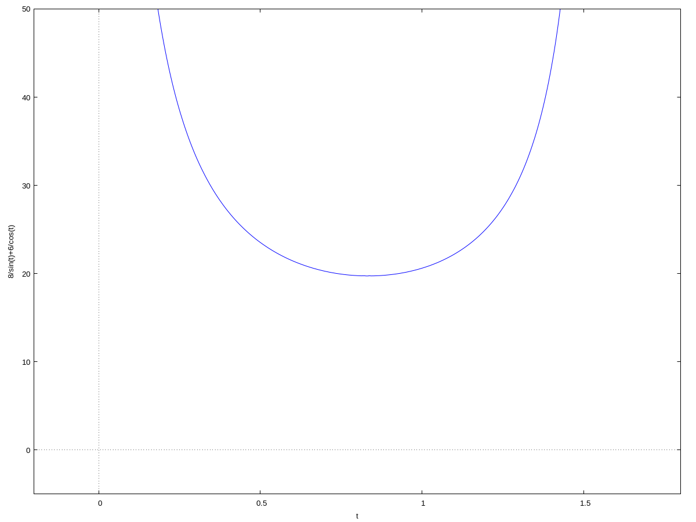

Optimization#
Discussion & Definitions#
One common application of calculus is calculating the minimum or maximum value of a function. The basic idea of optimization problems tends to be the same. We have a quantity that we want to maximize or minimize, along with some condition or restraint that needs to be satisfied as well.
Problem Solving: Optimization Problems
Introduce all variables. If applicable, draw a figure and label all variables.
Determine which quantity is to be maximized or minimized, and for what range of values of the other variables (if this can be determined at this time).
Write a formula for the quantity to be maximized or minimized in terms of the variables. This formula may involve more than one variable.
Write any equations relating the independent variables in the formula from step 3. Use these equations to write the quantity to be maximized or minimized as a function of one variable.
Identify the domain of consideration for the function in step 4 based on the physical problem to be solved.
Locate the maximum or minimum value of the function from step 4. This step typically involves looking for critical points and evaluating a function at endpoints.
Most of this process is done by hand but once you hit step 6 a computer algebra system can be of use, especially in situations where solving equations could prove difficult.
Example: Maximizing Area#
A rectangular garden is to be constructed using a wall as one side of the garden and fencing for the other three sides. Given 100 ft of fencing, determine the dimensions that would create a garden of maximum area. What is the maximum area?
Step 1: We let AB be the wall and the sides AC, CD, and BD are the fencing.

Example Figure#
Step 2: We want to maximize the area of the rectangle.
Step 3: The area of the rectangle is \(A = x \cdot y\).
Step 4: This is usually where the constraints come in. The piece of information we have not used yet is that we have 100 ft of fencing to work with. So this needs to stretch around the three sides, in other words, \(100 = 2x + y\). Solving this for y gives \(y = 100 - 2x\). Substituting this into our area equation,
and since it is now in a single variable we can write,
Step 5: Our independent variable is x which is a length of fencing so it must be \(x \geq 0\). We could also say that we only have 100 ft of fence so \(x \leq 100\), but there is a further constraint. The length y is also a length of fencing so \(y \geq 0\). But if y is 0 then x is 50 (two sides are length x). So the domain of our function is \(0 \leq x \leq 50\).
Step 6: So now we have a continuous function \(A(x) = x (100 - 2x)\) on a closed bounded interval \([0, 50]\). We know that there is an absolute maximum and absolute minimum for the function on that interval. Now it becomes a simple max/min problem. Take the derivative,
solving \(A'(x) = 0\) gives \(x = 25\). Evaluating \(A(0) = 0\), \(A(25) = 1250\), and \(A(50) = 0\). So the absolute maximum is 1250 sq.ft. when \(x = 25\) ft. Graphing the area function over the domain shows,

Graph of the area function over the domain.#
Here is how we could use technology for this example, although it is really not needed for something this straight forward.
GeoGebra#
Input the area function,
x y
this should come in as a(x, y), we will assume it does.
Input the constraint formula, solved for y,
100 - 2x
this should come in as f(x), we will assume it does. Substitute the constraint for y with,
a(x, f(x))
this should come in as g(x), we will assume it does. At this point we could just select Special Points for g and it will find the maximum. If we continue with the procedure we can find Solutions(g') which gives us 25 and then evaluate the g function at 0, 25, and 50 to get the maximum and the length x that attains it.
CLAE#
There are several ways you can do this in CLAE, we will present two methods and you can choose which you prefer.
Using Functions#
Input the area function,
A(x,y):=x*y
Input the constraint function,
c(x):=100-2*x
Substitute the constraint for y with,
g(x):=A(x, c(x))
Take the derivative, Calculus > Derivative, variable x, order 1. Result is \(100 - 4 x\). Solve this equation to get a single value 25. Evaluate with g(0), g(25), and g(50), to get the maximum and the length x that attains it.
Using Expressions#
Input the area function,
x*y
Assume it is in R1. Input the constraint function,
100-2*x
Assume it is in R2. Substitute the constraint for y with, Algebra > Evaluate, variable y, expression R2, assume it is in R3. Take the derivative, Calculus > Derivative, variable x, order 1. Result is \(100 - 4 x\). Solve this equation to get a single value 25. Evaluate by selecting R3 and then selecting Algebra > Evaluate, variable x and expression 0. Do the same with 25 and 50 to get the maximum and the length x that attains it.
Maxima#
Input the area function,
kill(all);
A(x,y):=x*y
Input the constraint function,
c(x):=100-2*x
Substitute the constraint for y with,
g(x):=A(x, c(x))
Take the derivative,
dg:diff(g(x),x)
Solve
solve(dg)
We get a single value 25. Evaluate with g(0), g(25), and g(50), to get the maximum and the length x that attains it.
Example: Maximizing Volume#
You are constructing a cardboard box with the dimensions 2 m by 4 m. You then cut equal-size squares from each corner so you may fold the edges. What are the dimensions of the box with the largest volume?
Step 1: We will let x be the length of the sides of the squares we cut from each corner. The layout of the box construction is below.

Example Figure#
Step 2: We want to maximize the volume of the box.
Step 3: The volume of a rectangular solid is \(V = L \cdot W \cdot H\).
Step 4: Once the sides are folded up the length is \(L = 4-2x\), the width is \(W = 2-2x\), and the height is \(H = x\). Substituting this into our volume formula gives,
Step 5: Our independent variable is x which is a length of the side of the removed squares, so it must be \(x \geq 0\). Also, we can see from the shorter side that we cannot cut more than 1 m since the side is length 2 m. So the domain of our function is \(0 \leq x \leq 1\).
Step 6: So now we have a continuous function \(V(x) = 4 x^{3} - 12 x^{2} + 8 x\) on a closed bounded interval \([0, 1]\). We know that there is an absolute maximum and absolute minimum for the function on that interval. Now it becomes a simple max/min problem. Take the derivative,
solving \(V'(x) = 0\) gives \(x = 1 - \frac{\sqrt{3}}{3}\) and \(x = \frac{\sqrt{3}}{3} + 1\), which are approximately 0.422649730810374 and 1.57735026918963 respectively. The second one is not in the domain of the function so it will be ignored. Evaluating we get,
\(V(0) = 0\)
\(V\left(1 - \frac{\sqrt{3}}{3}\right) = - \frac{8 \sqrt{3}}{3} - 12 \left(1 - \frac{\sqrt{3}}{3}\right)^{2} + 4 \left(1 - \frac{\sqrt{3}}{3}\right)^{3} + 8 = \frac{8 \sqrt{3}}{9} \approx 1.539600717839\)
\(V(1) = 0\)
So the absolute maximum volume is \(\frac{8 \sqrt{3}}{9} \approx 1.539600717839 \; m^3\) when \(x = 1 - \frac{\sqrt{3}}{3}\) m. Graphing the volume function over the domain shows,

Graph of the volume function over the domain.#
GeoGebra#
Input the volume function,
x(2 - 2 x)(4 - 2 x)
We will assume this came in as the function \(f'(x)\). Find the solutions to \(f'(x) = 0\) with Solutions(f'), the results are 0.42265 and 1.57735. The 1.57735 is outside the domain and hence ignored. We will assume the list of solutions is l1. Evaluate the function at the critical numbers and the endpoints,
\(f(0) = 0\)
\(f(0.42265) = 1.5396\) or we could use an input of
f(l1(1)).\(f(1) = 0\)
Note
We could have used Solve(f') to get the exact solution of \(\frac{-\sqrt{3} + 3}{3}\), but when substituted into the function the approximate result is returned anyway.
CLAE#
Input the volume function,
x*(2 - 2*x)*(4 - 2*x)
We will assume this came in as R1.
Expand the expression (not really necessary but we will do it anyway), Algebra > Expand. The result is \(4 x^{3} - 12 x^{2} + 8 x\).
Differentiate this with Calculus > Derivative, variable x, order 1. The result is \(12 x^{2} - 24 x + 8\).
Solve this with Algebra > Solve, variable x, the result is \(\left[ 1 - \frac{\sqrt{3}}{3}, \ \frac{\sqrt{3}}{3} + 1\right]\). Approximate this with Algebra > Approximate, result is \(\left[ 0.422649730810374, \ 1.57735026918963\right]\). This tells us that the first solution is the only critical number we need to consider.
Evaluate the original expression at 0, 1, and \(1 - \frac{\sqrt{3}}{3}\). Note that if the exact solution list was R4 then R4[0] will extract the first solution so you do not need to enter it by hand. Your results should be,
\(V(0) = 0\)
\(V\left(1 - \frac{\sqrt{3}}{3} \right) = \frac{2 \sqrt{3} \left(1 - \frac{\sqrt{3}}{3}\right) \left(\frac{2 \sqrt{3}}{3} + 2\right)}{3} = \frac{8 \sqrt{3}}{9} \approx 1.539600717839\).
\(V(1) = 0\)
Note that for \(V\left(1 - \frac{\sqrt{3}}{3} \right)\) the first result is what CLAE returned from the evaluation, the second was simplifying the first, and the third was approximating the second.
Maxima#
Input the volume function,
kill(all);
V(x):=x*(2 - 2*x)*(4 - 2*x)
Differentiate,
dv:diff(V(x),x);
The result is,
Solve this equation,
s:solve(dv)
The result is,
Approximate,
float(s), numer
The result is,
This tells us that the first solution is the only critical number we need to consider.
Evaluate \(V(0) = 0\), \(V(1) = 0\), and to do the critical number we can use,
vcn:V(rhs(s[1]))
The result is,
Approximating with
float(vcn), numer
returns 1.539600717839002.
Example: Maximizing Length#
You are carrying a length of board moving from an 8 ft hallway around a \(90^\circ\) corner to a 6 ft hallway. What is the length of the longest board that can be carried horizontally around the corner?
Step 1: A start on the diagram is below, we have labeled the length of the board as L.

Example Figure#
Step 2: We want to maximize the length of the board.
Steps 3 & 4: In some cases w combine steps 3 and 4 since they are so interrelated. There are many ways one can go here, we will take the following approach. First we will divide L into two lengths L1 and L2 with \(L = L_1 + L_2\). The angle that the board makes with the left wall we will call \(\theta\). We will also draw lines across the hallways to construct several right triangles. The angle that the board makes with the lower wall of the 6 ft hallway is \(\frac{\pi}{2}-\theta\). We can see this by looking at the largest triangle in the upper left, the angle opposite to \(\theta\) is complementary and hence its angle is \(\frac{\pi}{2}-\theta\), additionally the angle we are interested in is an alternating interior angle with this one and hence has the same measure. So our diagram has grown to the following.

Example Figure#
Now if we look at the small triangle on the left (that has \(L_1\) as its hypotenuse), we get the trigonometric relation,
Which give us \(L_1 = \frac{8}{\sin(\theta)}\). Using the small triangle in the upper right (that has \(L_2\) as its hypotenuse),
we get the trigonometric relation,
Which give us \(L_2 = \frac{6}{\sin\left(\frac{\pi}{2} - \theta\right)} = \frac{6}{\cos(\theta)}\). Recall that \(\sin\left(\frac{\pi}{2} - \theta\right) = \cos(\theta)\). So we can now write the length of the board as a function of \(\theta\).
Step 5: This one is a little tricky. Our independent variable is \(\theta\) which is an angle. If we put the intersection of the board and the left wall far down the diagram it appears that we can make the angle \(\theta\) as small as we want but it can not be 0 since the board touches the corner at the far wall, hence \(\theta > 0\). In the other extreme, if we move the intersection with the left wall up the diagram it must stop at the point where we drew the line across the 8 ft hallway, which would be at \(90^\circ = \frac{\pi}{2}\). Similarly, we cannot get exactly to \(90^\circ\) since the board touches the top wall, but we can get arbitrarily close to \(90^\circ\), hence \(\theta < \frac{\pi}{2}\). So our domain is \(0 < \theta < \frac{\pi}{2}\), which is not a closed interval.
Step 6: Since \(\sin(\theta)\) and \(\cos(\theta)\) are both non-zero in \((0, \frac{\pi}{2})\) our function \(L(\theta) = \frac{8}{\sin(\theta)} + \frac{6}{\cos(\theta)}\) is continuous on that interval but since the interval is not closed we cannot use the closed-bounded interval algorithm since there are no endpoints to check. If we graph the length function we get,

Graph the length function.#
The portion in \((0, \frac{\pi}{2})\) is the u-shaped curve in the upper center. Note that the function seems to be going to infinity as \(\theta\) approaches 0 from the right and \(\frac{\pi}{2}\) from the left. This should make perfect sense if you draw in the board placement at different angles and consider the lengths close to 0 and \(\frac{\pi}{2}\). What is interesting here is that to maximize the length of the board that will fit we need to minimize the length function. Again, if you think about this physically it should make sense. From the graph it appears that there is an absolute minimum of the function in this interval, which will be at a critical number.
Taking the derivative of the length function,
Solving \(L'(t) = 0\) we get,
So the maximum length (in feet) is,
GeoGebra#
Input the length function,
6/cos(x) + 8/sin(x)
The graph, after some adjustments, looks like,

Graph the length function.#
Now solve the derivative for 0 with Solutions(f'). Note that the output is (probably) in degrees, go into the settings and change the angle measure to radians and the results are, -2.30832 and 0.83327. The second one is the only one in our domain and it seems to correspond well with the image. So the longest the board can be is f(l1(2)) which is 19.73133.
Note
If we used Solve instead of Solutions we would still get an approximation to the value.
CLAE#
Input the length function,
6/cos(t) + 8/sin(t)
Graph it, with some adjustments,
Graph the length function.#
Take the derivative, Calculus > Derivative, variable t, order 1. The result is,
If we try to solve this, including using the advanced solvers, the output is not very nice. Interestingly if we do Algebra > Factor on this we get,
Then if we do Algebra > Solve on this we get,
which is approximately
So only the first solution is real and in our interval, furthermore it looks close to the minimum. It is also equivalent to the solution we got by hand. Substituting this into the length equation, simplifying, and approximating gives us,
Maxima#
Input the length function,
kill(all);
L(t):=6/cos(t) + 8/sin(t)
Graph it,
wxplot2d(L(t), [t,-0.2, 1.8], [y,-5, 50])

Graph the length function.#
Take the derivative,
dL:diff(L(t),t)
The result is,
If we try to solve this,
solve(dL)
we get,
The last entry is close to our exact solution but we will go with an approximation, since the minimum is between 0.5 and 1.5 we can use the find_root function in Maxima to approximate the solution.
find_root(dL,t,0.5, 1.5)
This returns 0.8332718598554955, substituting this into the length formula gives a maximum length of, 19.73132511087018.